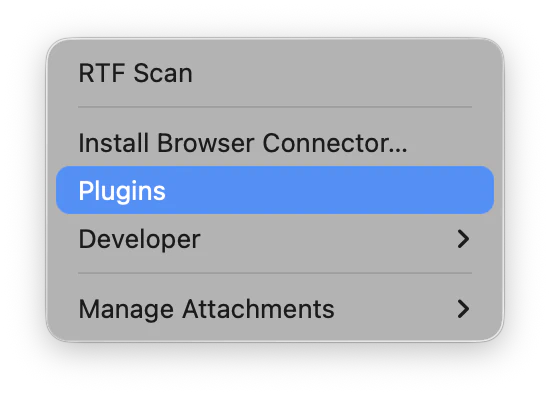
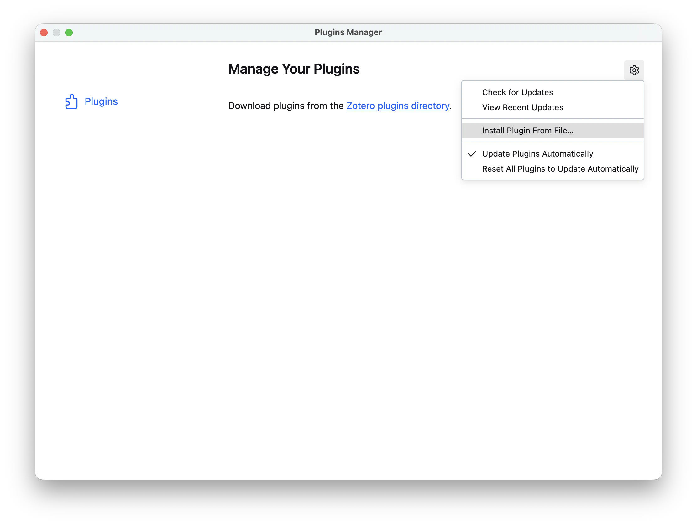
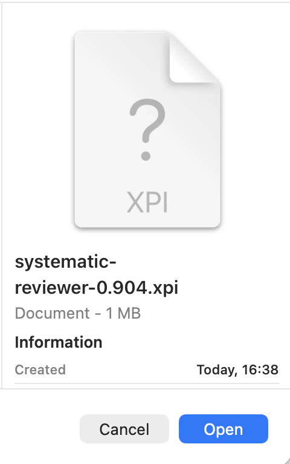
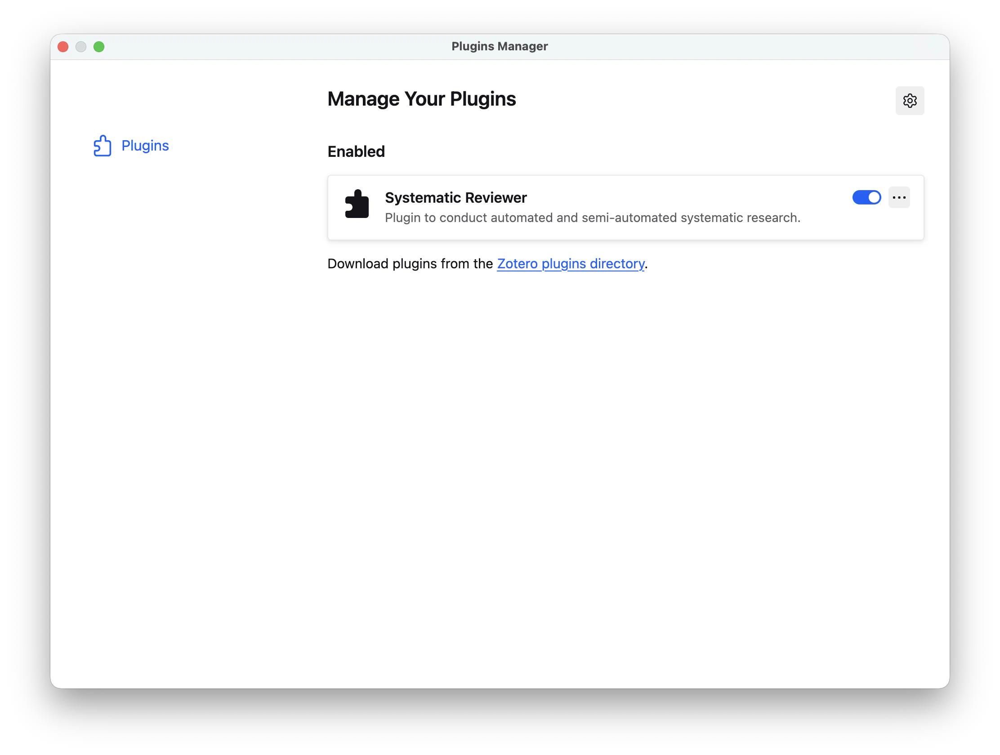

Install the Plugin
Systematic Reviewer - Research Preview is a third-party extension for the Zotero reference manager. Install Zotero first, then install the Systematic Reviewer XPI through Zotero's plugin manager.
Research Preview. Current builds are tested mostly on macOS Zotero. Windows and Linux are supported goals, but they have had less testing, so expect bugs. The software is made available in the hope that it will be useful for the purposes users choose, but it comes without assurances or warranties.
Testing has not shown damage to Zotero items or collections, but you should still back up important Zotero libraries, databases, and collections before using the extension, just in case. This plugin also brings agentic capabilities into your system. If you use managed computers or work with sensitive data, consult your IT services about possible security implications before installing it.
This project is largely developed with the help of AI coding agents, with best efforts to inspect, test, and correct their output. If something blocks your work, see Troubleshooting.
-
Download Zotero first
Systematic Reviewer runs inside Zotero, but it does not include or ship Zotero. If Zotero is not installed yet, get Zotero from the official Zotero website before installing this plugin: zotero.org/download.
Third-party extension. Systematic Reviewer is an independent project by OpenResearchTools, developed by Dr Rutkauskas. It is not affiliated with, sponsored by, or endorsed by Zotero or the Corporation for Digital Scholarship.
-
Download Systematic Reviewer
Choose a plugin XPI file below. Use the latest release for normal use. Use pre-releases only when you want the newest changes and are comfortable with preview-version bugs.
Downloads
Loading release downloads...
-
Open Zotero's Plugins menu
In Zotero, use the application menu to open Plugins. This opens Zotero's Plugins Manager, where extensions are installed and managed.

Choose Plugins from Zotero's application menu. -
Install the XPI from the Plugins Manager
In the Plugins Manager, use the gear menu and choose Install Plugin From File....

Choose Install Plugin From File... from Zotero's Plugins Manager gear menu. -
Select the plugin file
Choose the Systematic Reviewer XPI file you downloaded, then confirm the installation if Zotero asks.

Select the downloaded or built .xpi plugin file. -
Restart if Zotero asks
Some plugin changes only load after Zotero restarts. If Zotero asks to restart, save any work first, then restart Zotero.

After installation, Systematic Reviewer appears in Zotero's Plugins Manager. If a Systematic Reviewer menu does not appear after installation, fully close and reopen Zotero.